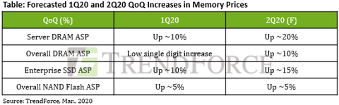
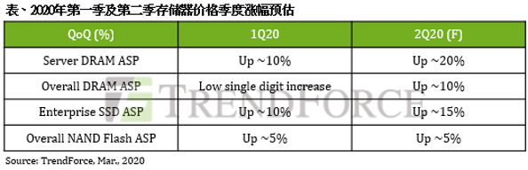
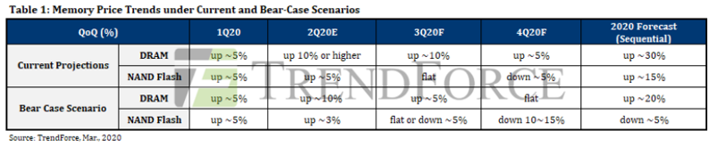
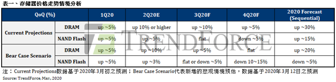
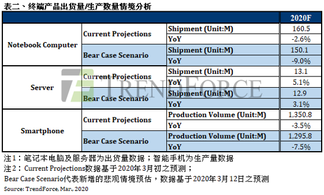
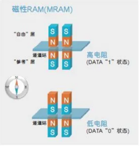
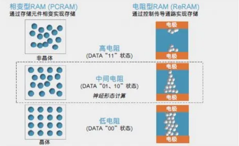

Market Trends
1. Despite Rising 2Q20 Server DRAM and Enterprise SSD Prices, Expanding COVID-19 Outbreak Means 2H20 Supply and Demand Situation Remains Important Point of Consideration(TrendForce 2020-03-10)
Citing the U.S. government’s JEDI contract as well as the increased need for telework due to the COVID-19 outbreak, the DRAMeXchange research division of TrendForce has now raised its previous forecast of 2Q20 server DRAM price trend from a 15% increase QoQ up to a 20% increase QoQ. The same uptrend is reflected in 2Q20 enterprise SSD prices as well, with the previous forecast of a 5-10% increase QoQ now corrected up to a 10-15% increase QoQ. In addition, memory suppliers are now facing low inventory levels, subsequently prompting them to maintain the 2Q20 price upsurge.

服务器内存及企业级第二季价格维持上涨格局，唯疫情持续扩大需注意下半年所带来的供需改变（TrendForce 2020-03-10)
在美国政府标案与疫情带动的远程服务需求趋动下，Server DRAM第二季的价格涨幅从原先预测的季增15%扩大至20%；Enterprise SSD第二季价格亦同步上修，预估涨幅将从原先的5-10%扩大至10-15%。同时，存储器供应商手中库存偏低，原厂将守住第二季上涨的走势不变。
集邦咨询指出，2019年第四季开始，美国政府联合组织防卫基础设施(JEDI)标案需求持续驱动服务器市场，而疫情于全球快速传播使得远程办公需求大增，尤其中国云端业者的备货需求在二月显著增长。阿里巴巴、腾讯主要受远程办公需求驱动；字节跳动则因北美业务扩张至电子商务、游戏与金融应用等，进而带动北美自建数据中心的需求再成长。
需求的持续增加使得供需双方的内存库存皆达低点，加上中国电信业者普遍于二月开始执行新一轮的招标，将使得Server DRAM供货更为吃紧，进而带动价格上扬。虽然中国疫情暂受到控制，但欧洲疫情却迅速升温，加上美国数州也发生感染，将有可能冲击全球的消费者信心，全球需求发生变化下亦会让整体的供需结构改变，下半年的价格走势将依据疫情的扩散程度再观察。

2.As COVID-19 Outbreak Officially Becomes Pandemic, Global System-Wide Risks to Distress Memory Industry. (TrendForce 2020-03-13)
According to the DRAMeXchange research division of TrendForce, despite the apparent slowdown of the COVID-19 outbreak in China, the virus is now rapidly multiplying across the Middle East, Europe, and the United States. Earlier, the World Health Organization declared the COVID-19 outbreak a pandemic, which poses dire, system-wide risks for the global economy. Similarly, the memory market may take a turn for the worse and go into a slump earlier than expected.
Regarding market demand, the pandemic’s rapid proliferation will severely impede economic and social activities and subsequently hinder consumer purchasing power. On the other hand, lowered electronic product shipments will bring about a corresponding drop in memory demand. DRAM and NAND Flash ASPs are able to maintain their growths in 1Q20 and 2Q20 primarily because of relatively low client inventory levels. Provided that the current ASP uptrend continues, clients may have a strong incentive to raise their stock of memory products. Nevertheless, TrendForce believes the true challenge facing the memory industry will surface in 3Q20, when sluggish consumer demand will encumber device manufacturers’ inventory reduction efforts, massively weakening client-side memory procurement and resulting in limited ASP growth. Worse yet, rising NAND Flash prices may make a turnaround into a decline instead.

新冠肺炎正式进入大流行，全球性系统风险将冲击存储器产业（TrendForce 2020-03-13)
集邦咨询半导体研究中心(DRAMeXchange)表示，虽然中国疫情看似趋缓，然中东、欧洲与美国疫情急速扩散，世界卫生组织(WHO)已正式宣布新冠肺炎成为全球大流行传染病，将让全球经济陷入系统性风险，存储器市场恐怕提前反转进入不景气周期。
从需求来看，新冠肺炎的大流行将严重冲击经济与社会活动，进一步影响个人消费力道；而终端产品的出货下滑，势必将造成存储器需求同步下修。2020年第一季与第二季DRAM与NAND Flash均价仍维持上涨，主要是因为年初客户端库存水位偏低，虽在价格走势持续上扬的前提下，采购备货意愿强烈，然集邦咨询认为真正的挑战会从第三季开始，随着需求萎缩导致库存去化不易，将大幅削弱客户端采购力道，使得价格涨幅受到抑制，在NAND Flash领域更可能由涨转跌。


3.三大存储器Q2合约价喊涨 (台湾经济日报 2020-03-09)
新冠肺炎疫情扩散带动各大资料中心扩大建置规模，推升服务器存储器需求转强，加上5G手机推陈出新，以及三星、SK海力士和美光等主要供应商库存下滑等因素催动，第2季DRAM、NAND Flash、NOR Flash等三大存储器行情看涨，助攻南亚科、华邦电、旺宏、威刚、群联等厂商营运。
目前主要大厂正密集与系统/模组厂进行第2季合约价议价。渠道商透露，包括三星等主要供应商已通知调涨下季DRAM、储存型快闪存储器（NAND Flash）合约价，涨幅都达双位数。
编码型快闪存储器（NOR Flash）方面，因中国大陆主要大厂复工、出货不顺，中国台湾指标厂旺宏已决定第2季调涨NOR Flash合约价，涨幅逾一成。
尽管市调机构及法人担心新冠肺炎疫情冲击全球经济，导致终端消费需求减弱，不过存储器市场受惠于疫情带动宅经济大好，网购、电商、线上游戏、电竞游戏逆势成长，首季三大存储器需求仍强，其中，因资料中心扩大服务器建置，推升服务器用的DRAM和NAND Flash需求更为强劲。
4.实话实说，疫情对全球半导体业到底有多大影响？(中国电子报 2020-03-10)
Garner研究副总裁盛陵海指出，目前疫情向全球蔓延已经是大概率事件。在全球一体化的当下，疫情的扩散势必会对半导体产业造成影响。台湾经济研究院研究员刘佩真也指出，由于日韩在全球半导体供应链上具有关键地位，尤其在存储器、半导体材料、封测等领域，因此日韩确诊病例数暴增，也使日韩供应链产生了不确定性，恐将拖累今年全球半导体产业增长幅度。
从目前半导体产业分布状况来看，韩国是存储器重镇，全球市占达到73％。市调机构集邦科技的数据显示，三星电子DRAM市占率达到43％居冠，其次是SK海力士，占比29％。韩国疫情加重有可能影响到存储器供应链。需要注意的是，市场最近频频传出存储芯片价格或将大涨的消息。日本半导体工厂方面目前虽然没有关于疫情的消息披露，但是日本在半导体上游材料领域的地位十分重要，几乎占据了全球半导体材料市场的半壁江山，一旦受到疫情波及，问题将更加严重。
值得注意的是，近期美股的大跌更多是受到疫情在除中国之外世界各地蔓延的影响，尤其是在日本、韩国、意大利公布了大批确诊数字之后。这显示了日本和韩国在全球半导体领域占据着重要节点，一旦日韩受疫情影响而停工停产，那么全球半导体产业将受到重大扰动。
Vendor News
1.SK Hynix Clears a Hurdle to Release of HBM2E DRAMs (Business Korea 2020-03-04)
SK Hynix has passed one of the hurdles to the launch of a next-generation memory.
U.S. semiconductor company Synopsys recently announced that it will provide a memory system on chip (SoC) interface solution based on its packaging technology to SK Hynix for manufacturing of the high bandwidth memory (HBM2E).
The SoC meets JEDEC’s HBM2E SDRAM standard based on the 7-nm process of TSMC, and has a data rate of 409 GB/sec. It can handle 110 full HD movies (3.7 GB per film) in just one second.
SK Hynix was the first company that proposed HBM chips to JEDEC. The chip can simultaneously send power to data through thousands of holes. It can reduce the chip size by more than 30 percent and power consumption by more than 50 percent compared to the current packaging method.
2.Samsung Announces Industry’s First EUV DRAM with Shipment of First Million Modules (Samsung 2020-03-25)
Samsung Electronics, the world leader in advanced memory technology, today announced that it has successfully shipped one million of the industry’s first 10nm-class (D1x) DDR4 (Double Date Rate 4) DRAM modules based on extreme ultraviolet (EUV) technology. The new EUV-based DRAM modules have completed global customer evaluations, and will open the door to more cutting-edge EUV process nodes for use in premium PC, mobile, enterprise server and datacenter applications.
Samsung is the first to adopt EUV in DRAM production to overcome challenges in DRAM scaling. EUV technology reduces repetitive steps in multi-patterning and improves patterning accuracy, enabling enhanced performance and greater yields as well as shortened development time.
EUV will be fully deployed in Samsung’s future generations of DRAM, starting with its fourth-generation 10nm-class (D1a) or the highly-advanced 14nm-class, DRAM. Samsung expects to begin volume production of D1a-based DDR5 and LPDDR5 next year, which would double manufacturing productivity of the 12-inch D1x waf.
3.Intel & Micron Sign New 3D XPoint Wafer Supply Agreement (ANANDTECH 2020-03-16)
Intel and Micron have inked a new 3D XPoint memory wafer supply agreement. Analysts believe that Intel will now have to pay Micron more than it did previously as it is now the only maker of 3D XPoint. The new pact also shows that Intel wants to continue making products based on 3D XPoint, but details about the products remain to be seen.
Having ended its NAND and 3D XPoint partnerships with Micron, Intel sold its former partner its stake in their mutually owned fab in Lehi, Utah. Since the company yet has to move production of 3D XPoint memory used for its Optane-branded products to its Fab 68 in Dalian, China, the chipmaker had to sign a supply agreement with Micron, under which the latter would sell the memory to its former ally at pre-agreed prices for one year after it gains ownership of the fab.
Micron gained ownership back in October, which is when the agreement came into effect. As it turns out, the two companies terminated the deal on March 9 and signed a new one ‘with changes to pricing and forecast terms’. The companies did not reveal additional details, but Micron said that the deal was ‘not material to Micron and does not change Micron’s previously-communicated outlook’.
…………
4.Micron to Launch HBM2 DRAM This Year: Finally (AntonShilov 2020-03-27)
Bundled in their latest earnings call, Micron has revealed that later this year the company will finally introduce its first HBM DRAM for bandwidth-hungry applications. The move will enable the company to address the market for high-bandwidth devices such as flagship GPUs and network processors, which in the last five years have turned to HBM to meet their ever-growing bandwidth needs. And as the third and final of the “big three” memory manufacturers to enter the HBM market, this means that HBM2 memory will finally be available from all three companies, introducing a new wrinkle of competition into that market.
5.新型存储的机会来了？格芯22nm工艺量产eMRAM(中国电子报 2020-03-13)
近日，格芯宣布基于22nm FD-SOI （22FDX）工艺平台，新型存储器eMRAM（嵌入式、磁阻型非易失性存储器）已投入生产。eMRAM属新型存储技术，与当前占据市场主流的DRAM和NAND闪存相比，具有更快的存取速度和更高的耐用性，在边缘设备中具有替代NAND闪存和部分SRAM的潜质。它在22nm工艺下的投产，将加快新型存储技术的应用进程，未来发展前景看好。
22nm FD-SOI工艺eMRAM年内量产，采用相关芯片的终端明年面世。
根据格芯的报告，将在德国德累斯顿1号晶圆厂的12英寸生产线，进行eMRAM的制造加工。目前，格芯正在接洽多家客户，计划于2020年安排多次生产流片。这也意味着，采用22nm FD-SOI工艺的eMRAM有望于2020年投入量产，采用相关芯片产品的终端设备于2021年有望面世。
eMRAM属新型存储技术，相比DRAM和NAND闪存，具有更快的存取速度和更高的耐用性，适用于物联网、通用微控制器、汽车电子、终端侧人工智能设备和其他低功耗设备当中。基于22nm FD-SOI先进工艺节点制造，产品将具有更高的性价比。格芯汽车、工业和多市场战略业务部门高级副总裁和总经理Mike Hogan表示：“客户可利用这些解决方案来构建适用于高性能和低功耗应用的创新产品。基于FDX平台生产的eMRAM，更有利于集成在高性能射频、低功耗逻辑和集成电源管理的解决方案中实现产品的差异化。
6.日本半导体材料厂商纷纷在韩设厂 维持与三星合作关系 (凤凰科技 2020-03-09)
北京时间3月9日消息，由于日韩贸易关系紧张迟迟得不到解决，担心与全球供应链脱轨的日本半导体材料厂商， 日本半导体材料厂商纷纷在韩国设立生产基地。
被称作ADEKA的公司，已经将半导体材料的生产基地由日本鹿岛市搬迁到韩国全州市。
关东电化学工业公司向韩国半导体厂商供应NF3（三氟化氮），目前在位于韩国天安市的工厂生产这种产品。
在韩国设厂，成为日本半导体材料厂商维持与三星和SK海力士长期合作关系的一个举措。预计未来会有更多日本半导体材料厂商在韩国建厂，防止与全球半导体供应链脱轨。
New Technology
1.持续演进传统存储器，还是给新技术一个机会？(电子工程专辑 2020-03-15)
存储产业有着周期性的波动，每当技术处于升级期时，就会出现价格上升;而技术成熟让存储密度提升，并且大批量生产后，又会让整个市场因为供过于求价格下降。
可见，推动产业的是先进技术。但是人都不喜欢“改变”，无论半导体供应商还是OEM方案商，也许都更倾向于接受在既有产线和技术基础上的升级，而不是全面导入一种新技术。虽然目前传统存储器在3D工艺加持下尺寸更小、密度更大，性能得到很大提升，但新兴内存技术无论是作为独立芯片还是被嵌入于ASIC、微控制器(MCU)和运算处理器中，都有可能变得比现有的内存技术更具竞争力。
预计到2029年，新兴内存市场可望创造200亿美元的合并收入。其中，PCRAM由于价格低于DRAM，可望在2029年前成长至160亿美元的市场规模。同时，独立型MRAM和STT-MRAM(基于自旋转移力矩的MRAM)的收入将接近40亿美元，或超过2018年MRAM收入的170倍。

